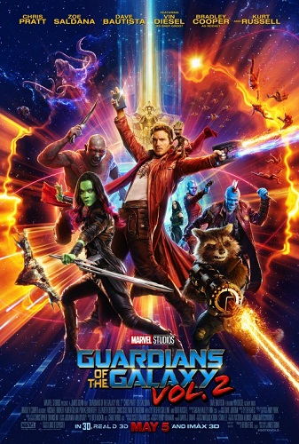

Guardiões da Galáxia (vol 1)

Groot é apresentado como um ser adulto, alto, de fala limitada, mas com grande empatia e inteligência emocional.
Inicialmente parceiro de Rocket Raccoon como caçadores de recompensas.
Apesar da aparência intimidadora, revela uma personalidade gentil, brincalhona e protetora.
Um momento-chave ocorre quando Groot se sacrifica para salvar os Guardiões durante a queda da nave Dark Aster, dizendo pela primeira vez “We are Groot”, simbolizando sua conexão com o grupo.
No final, Rocket planta um galho restante de Groot, dando início a uma nova fase de vida
Guardiões da Galáxia (vol 2)
Reencarna como Baby Groot, com corpo pequeno, cabeça desproporcional e comportamento infantil.
Age como uma criança curiosa, com lapsos de atenção, dificuldade em compreender instruções simples, mas sempre tentando ajudar.
Apesar do tamanho, participa ativamente das missões, inclusive plantando uma bomba crucial contra Ego, o planeta vivo.
Suas expressões corporais e interações com os outros membros oferecem alívio cômico, mas também reforçam os laços de afeto no grupo.

Guardiões da Galáxia (vol 3)
Em sua forma mais recente, Groot aparece como Alpha Groot (nome não oficial), fisicamente mais robusto, com traços musculosos e presença imponente.
Continua com sua fala limitada, mas se mostra muito mais comunicativo através de expressões e gestos.
Age como um verdadeiro guerreiro, mostrando novos poderes, como regeneração rápida, manipulação de galhos e até armazenamento de armas em seu corpo.
Sua maturidade emocional é evidente: agora age com mais responsabilidade e coragem, participando de estratégias com os demais Guardiões.
Na cena final, fala claramente “Eu amo vocês”, surpreendendo os fãs — interpretado por James Gunn como um momento simbólico, indicando que agora nós, espectadores, também entendemos sua linguagem.